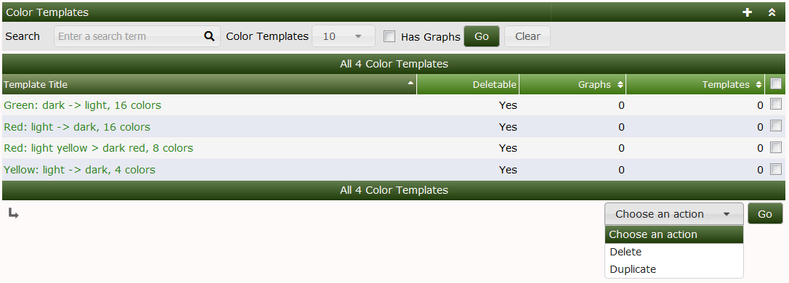
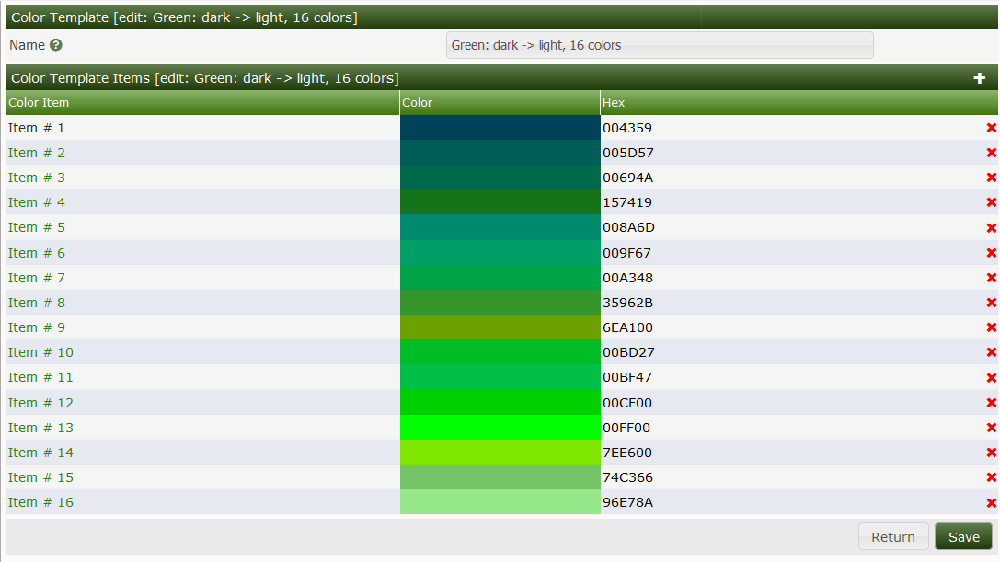
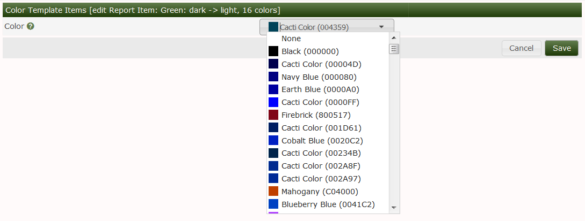

Color Templates define a list of Colors to be used for Aggregate Graphs in Cacti. As you add Graphs to an Aggregate Graph, you need to distinguish one Graph from the next within the Aggregate Graph. These Color Templates are a list of colors that will be looped through in Round Robin fashion to render the Aggregate Graph.
So, for example, if your Color Template uses 8 differing Colors, and your Aggregate Graph includes 16 Graph Items, then each color will be used twice in the Aggregate Graph.
Below, you can see the four standard Color Templates, you can see that you have the ability to either Delete or Duplicate the Color Templates. As with other Cacti objects, you will not be allowed to Delete a Color Template in use.

In the image below, you can see the Color Template edit screen. This simply screen allows you to add, remove and re-order colors in the list.

Shown in the image below, only Cacti Colors are allowed to be selected for Aggregate Color Templates. The Color drop down can by typed into if you wish to search through the list of approximately 340 legacy and Named Colors.

Copyright (c) 2004-2024 The Cacti Group